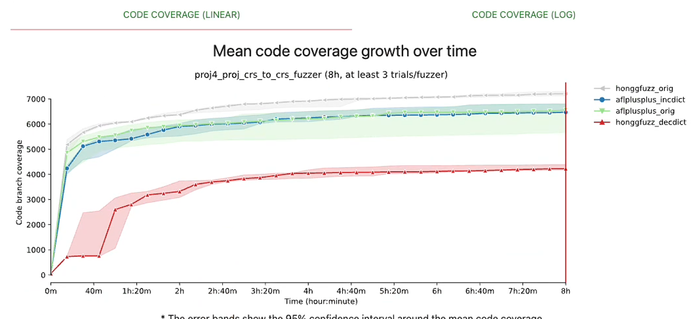

Honggfuzz的DynamicFeedbackDict机制
实际场景的优势
Honggfuzz实现了一套相比现有cmplog更简单的机制，却达到了很好的效果，甚至在proj4_proj_crs_to_crs_fuzzer这个benchmark上超越了其他的fuzzer。
honggfuzz 禁用feedback dict后，效果大打折扣
可以看到图中，禁用feedback的hongfuzz-decdict，覆盖率降低了接近一半。正常的honggfuzz-orig，比AFL++效果还要好。
Clang的trace-cmp选项
Clang可以增加--trace-cmp选项，在代码中出现比较指令的时候，会调用提供的插桩函数
1
| void __sanitizer_cov_trace_cmp8(uint64_t Arg1, uint64_t Arg2);
|
honggfuzz提供的插桩函数在/sn640/fuzzerlog/honggfuzz/libhfuzz/instrument.c。
Honggfuzz的插桩逻辑
Hongfuzz的feedback dict主要分为两部分，
- 插桩部分负责将重要的内容存入dict数组，即生成dict关键词。
- 后续mutation中随机抽取数组中的词找个位置随机插入或者覆盖（即和普通的dict使用一致（虽然使用概率很高，大于50%）。
因此主要介绍插桩部分。
首先是存储生成的dict的数组。结构如下所示：
1
2
3
4
5
6
7
| typedef struct {
uint32_t cnt;
struct {
uint8_t val[32];
uint32_t len;
} valArr[1024 * 16];
} cmpfeedback_t;
|
这个结构在整个fuzzing过程中共享一个实例。其中第一个字段的cnt会随着fuzz过程不断增长。每个dict的值不能超过32字节大小，总数量不超过1024*16个。后面mutation的时候就是随机抽取valArr里的成员。所以我们重点关注valArr的使用。
以__sanitizer_cov_trace_cmp8为例，主要有以下几个插桩逻辑：
- 每4095次才进入内部，即按概率随机抽取进入内部逻辑。
__builtin_bswap64主要负责处理大小端的问题。util_64bitValInBinary很关键，仅过滤出binary中存在的内容，加入dict。因为比较运算的时候，经常是输入中的一个什么东西和程序里的常量比较。如果不加过滤，那么就是把fuzz自己得出的东西当做dict使用，意义不大。
- 在最开始的时候，honggfuzz会整理程序中的值存到values32InBinary数组中。这个数组在
collectValuesInBinary_cb中被初始化。它使用libdl，遍历程序（非动态链接库）中readonly的段，就直接按32字节，64字节收集起来了。然后排序，方便后续二分查找。
1
2
3
4
5
6
7
8
9
10
11
12
13
14
15
16
17
18
19
20
21
| void __sanitizer_cov_trace_cmp8(uint64_t Arg1, uint64_t Arg2) {
if (globalCmpFeedback && instrumentLimitEvery(4095)) {
if (Arg1 > 0xffffff) {
uint64_t bswp = __builtin_bswap64(Arg1);
if (util_64bitValInBinary(Arg1) || util_64bitValInBinary(bswp)) {
instrumentAddConstMemInternal(&Arg1, sizeof(Arg1));
instrumentAddConstMemInternal(&bswp, sizeof(bswp));
}
}
if (Arg2 > 0xffffff) {
uint64_t bswp = __builtin_bswap64(Arg2);
if (util_64bitValInBinary(Arg2) || util_64bitValInBinary(bswp)) {
instrumentAddConstMemInternal(&Arg2, sizeof(Arg2));
instrumentAddConstMemInternal(&bswp, sizeof(bswp));
}
}
}
hfuzz_trace_cmp8_internal((uintptr_t)__builtin_return_address(0), Arg1, Arg2);
}
|
上面插桩获取的都是大小为4或者8的值，此外，字符串比较也非常重要。这是通过libhfuzz/memorycmp.c里的插桩实现的。
1
2
3
| __sanitizer_weak_hook_strcmp
__sanitizer_weak_hook_strcasecmp
__sanitizer_weak_hook_stricmp
|
1
2
3
4
5
6
7
8
9
10
11
12
13
14
15
16
17
18
| void instrumentAddConstStr(const char* s) {
if (!globalCmpFeedback) {
return;
}
if (!instrumentLimitEvery(127)) {
return;
}
if (s[0] == '\0' || s[1] == '\0') {
return;
}
if (util_getProgAddr(s) == LHFC_ADDR_NOTFOUND) {
return;
}
instrumentAddConstMemInternal(s, strlen(s));
}
|
对于字符串比较，也存在可能把自己fuzz随机生成的东西抓过来的问题。这里通过判断值的地址是不是映射到二进制内部进行筛选。一般程序输入的值都在栈上或者堆上，然后和程序自带的字符串（位于不可变的内存区域）进行比较。如下面的代码所示，如果值太长就切断到32字节。同时也会遍历已有的map找是否已经这个值已经被插入了。
1
2
3
4
5
6
7
8
9
10
11
12
13
14
15
16
17
18
19
20
21
22
23
24
25
26
27
28
29
| static inline void instrumentAddConstMemInternal(const void* mem, size_t len) {
if (len <= 1) {
return;
}
if (len > sizeof(globalCmpFeedback->valArr[0].val)) {
len = sizeof(globalCmpFeedback->valArr[0].val);
}
uint32_t curroff = ATOMIC_GET(globalCmpFeedback->cnt);
if (curroff >= ARRAYSIZE(globalCmpFeedback->valArr)) {
return;
}
for (uint32_t i = 0; i < curroff; i++) {
if ((len == ATOMIC_GET(globalCmpFeedback->valArr[i].len)) &&
hf_memcmp(globalCmpFeedback->valArr[i].val, mem, len) == 0) {
return;
}
}
uint32_t newoff = ATOMIC_POST_INC(globalCmpFeedback->cnt);
if (newoff >= ARRAYSIZE(globalCmpFeedback->valArr)) {
ATOMIC_SET(globalCmpFeedback->cnt, ARRAYSIZE(globalCmpFeedback->valArr));
return;
}
memcpy(globalCmpFeedback->valArr[newoff].val, mem, len);
ATOMIC_SET(globalCmpFeedback->valArr[newoff].len, len);
wmb();
}
|